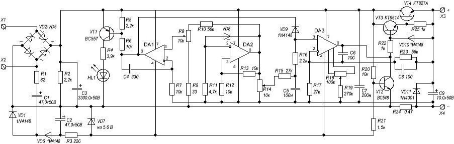
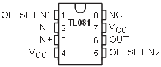

Лабораторный блок питания (0-30 В, 3 А)
Достоинства данного блока питания:
- выходное напряжение можно регулировать в диапазоне от 0 и до 30 В;
- можно выставлять какой-то предел по силе тока до 3 А, после которого блок уходит в защиту;
- очень низкий уровень пульсаций (постоянный ток на выходе блока питания мало чем отличается от постоянного тока батареек и аккумуляторов);
- защита от перегрузки и неправильного подключения;
- на блоке питания путем короткого замыкания (КЗ) «крокодилов» устанавливается максимально допустимый ток. Т.е. ограничение по току, которое вы выставляете переменным резистором по амперметру. Следовательно перегрузки не страшны. Сработает индикатор (светодиод) обозначающий превышение установленного уровня тока.

Рис. 1 - Схема лабораторного блока питания
Таблица 1
| Позиционное обозначение |
Наименование | Номинал | Примечание |
|---|---|---|---|
| С1 | Конденсатор электролитический | 3300 мкФ/50 В | |
| C2, C3 | Конденсатор электролитический | 47 мкФ/50 В | |
| C4 | Конденсатор | 100 нФ | |
| С5 | Конденсатор | 200 нФ | |
| C6, C9 | Конденсатор | 100 пФ | керамический |
| C7 | Конденсатор электролитический | 10 мкФ/50 В | |
| С8 | Конденсатор | 330 пФ | керамический |
| R1 | Резистор постоянный | 2,2 кОм/1 Вт | |
| R2 | Резистор постоянный | 82 Ом/0,25 Вт | |
| R3 | Резистор постоянный | 220 Ом/0,25 Вт | |
| R4 | Резистор постоянный | 4,7 кОм/0,25 Вт | |
| R5, R6, R13, R20, R21 | Резистор постоянный | 10 кОм/0,25 Вт | |
| R7 | Резистор постоянный | 0,47 Ом/5 Вт | |
| R8, R11 | Резистор постоянный | 27 кОм/0,25 Вт | |
| R9, R19 | Резистор постоянный | 2,2 кОм/0,25 Вт | |
| R10 | Резистор постоянный | 270 кОм/0,25 Вт | |
| R12, R18 | Резистор постоянный | 56 кОм/0,25 Вт | |
| R14 | Резистор постоянный | 1,5 кОм/0,25 Вт | |
| R15, R16 | Резистор постоянный | 1 кОм/0,25 Вт | |
| R17 | Резистор постоянный | 33 Ом/0,25 Вт | |
| R22 | Резистор постоянный | 3,9 кОм/0,25 Вт | |
| RV1 | Резистор подстроечный | 100 кОм | многооборотный |
P1, P2 |
Резистор переменный | 10 кОм | линейный |
| VD1-VD4 | Диод | 1N5401…1N5408 | |
| VD5, VD6, VD9, VD10 | Диод | 1N4148 | |
| VD7, VD8 | Cтабилитрон | на 5,6 В | |
VD11 |
Диод | 1N4001 | на ток 1 A |
| VD12 | Cветодиод | ||
| VT1 | Транзистор биполярный, n-p-n | BC548 | ВС547 |
| VT2 | Транзистор биполярный, n-p-n | КТ961А | |
| VT3 | Транзистор биполярный, p-n-p | BC557 | BC327 |
| VT4 | Транзистор биполярный, n-p-n | КТ827А | |
| U1, U2, U3 | Операционный усилитель | TL081 |
На входы X1 и X2 подается переменное напряжение 24 В от сетевого трансформатора. Трансформатор должен быть приличных габаритов, чтобы в нагрузку он смог выдать до 3 А.
Диоды D1…D4 соединены в диодный мост. Можно взять диоды, которые выдерживают прямой ток 3 А и выше (1N5401...1N5408, КД213), или использовать готовый диодный мост, который бы тоже выдерживал прямой ток 3 А и выше.
Микросхемы U1, U2, U3 представляют из себя операционные усилители. Их цоколевка (расположение выводов) показана на рис. 2.

Рис. 2 - Цоколевка операционных усилителей TL081
«NC» на выводе 8 означает, что этот вывод никуда не присоединяется. В схеме выводы 1 и 5 также никуда не соединяются. Операционные усилители желательно устанавливать в панельки ("кроватки") для микросхем.
Транзистор КТ961А лучше поставить на радиатор.
Источники
ruselectronic.com - Лабораторный блок питания 0-30 Вольт 3 Ампера, с регулировкой силы тока
radioingener.ru - Лабораторный блок питания от 0—30 Вольт от 0,002—3 А